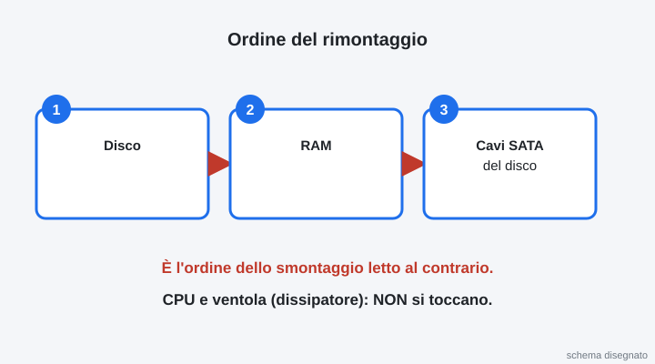
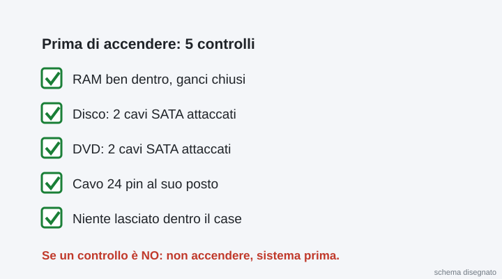
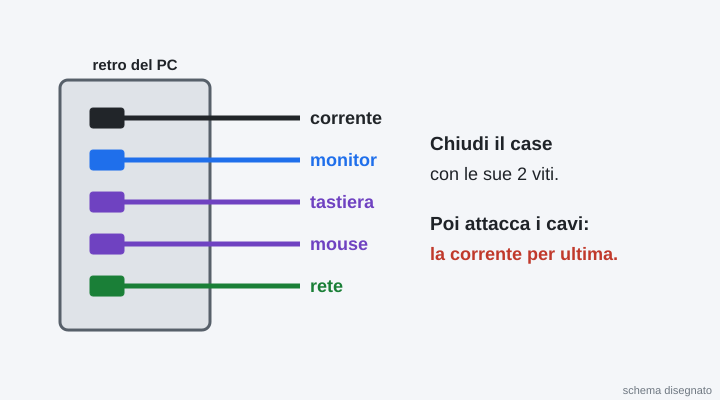
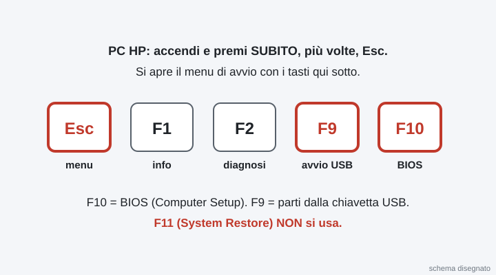
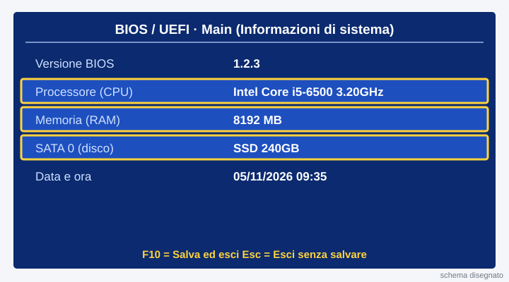
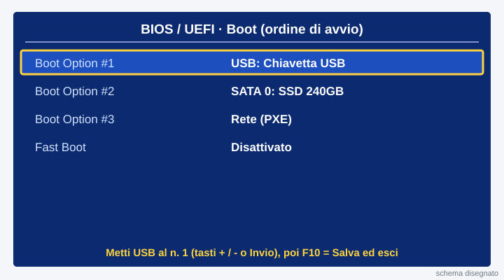
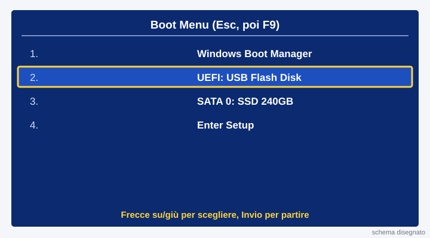

2INF · Laboratorio professionale · giovedì 05/11/2026 · ore 9-10 · a coppie: un PC per coppia · si consegna la scheda con un bottone
Ora 2 · Rimontaggio, accensione e BIOS
La pagina viene aggiornata spesso durante la lezione: premi F5 per vedere la versione nuova.
Chi siete?
Scrivete i vostri nomi e il numero del banco: servono al cruscotto e alla scheda.
Il percorso di questa ora
Non dovete scegliere niente: partite dal passo con il bordo blu. Ogni passo fatto: premete «Ho fatto!».
Sei bloccato? Scrivi la domanda nella casella dell'assistente in fondo alla pagina: ti risponde subito. Alza la mano solo se il PC non funziona, se un pezzo si rompe o se qualcuno si fa male.
Rimonta in ordine inverso
Si rimonta al contrario: RAM, poi i cavi del DVD e del disco. Ogni pezzo si spinge finché fa clic.

Rimetti la RAM
Guarda la tacca della RAM e il dentino dello slot: devono combaciare. Spingi dritto con due pollici fino al «clic».

Riattacca i cavi del DVD e del disco
Attacca al lettore DVD e al disco il cavo SATA dati (sottile) e il cavo SATA di alimentazione (largo). Ogni spina entra in un solo verso: non forzare.

Fai i 5 controlli prima di accendere
Controllate insieme: RAM con i ganci chiusi, disco con 2 cavi, DVD con 2 cavi, 24 pin al suo posto, niente lasciato dentro il case. Spunta i 5 controlli nella scheda in fondo. Se un controllo è NO, non accendere: sistema prima.

Chiudi il case e collega i cavi
Rimetti il pannello e fallo scorrere finché fa clic. Collega monitor, tastiera, mouse e rete. La corrente per ultima.

Accendi ed entra nel BIOS
Premi il tasto di accensione. Subito, più volte, premi Canc (o F2): lo schermo all'avvio dice il tasto giusto. Entri nel BIOS/UEFI.

Leggi CPU, RAM e disco
Nella prima schermata del BIOS (Main o Informazioni di sistema) leggi: il nome della CPU, quanta RAM c'è, il nome del disco. Scrivili nella scheda.

Metti la chiavetta USB per prima
Vai nella scheda Boot (Avvio). Metti USB al primo posto nell'ordine di avvio. Premi F10 e conferma: il BIOS salva ed esce.

Se non trovi l'ordine di avvio: menu F12
Nessun problema: spegni, accendi e premi F12 (o Esc). Nel menu di avvio scegli la chiavetta USB. Vale solo per questa volta.

Compila la scheda e mandala al prof
Compilate insieme la scheda qui sotto. Poi premi Manda al prof: un clic solo. Si apre la pagina «Consegna arrivata al prof».
Se il bottone non funziona: premilo di nuovo tra un minuto. La scheda resta salvata in questa pagina.

La pagina viene aggiornata spesso durante la lezione: premi F5 per vedere la versione nuova.